If your vehicle breaks down
If your vehicle breaks down and you require roadside assistance, there are steps you can take to keep yourself safe and minimise the risk for others:
- Be vigilant, it is often difficult for other vehicles to stop in a hurry so assess the area for risks and hazards.
- Find a safe spot to pull over. Park the car as far left as possible.
- Make sure you can be seen. Turn on your hazard lights. Turn on your parking lights in poor light, or raise your bonnet.
- If it's safe to leave the car, try to exit from the left passenger side. Move to the far left of the road, away from your car and behind a safety barrier if possible while waiting for help.
- If you need to change a flat tyre or check under the bonnet of your car, remain aware of other cars driving past. If it's not safe, call for roadside assistance.
- Use of portable warning triangles in vehicles over 12 tonnes. If the triangles are not properly placed, the driver could face prosecution and would be held liable for any crash that results from a failure to comply with these requirements.
Traffic lights
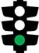
Green means proceed through the intersection carefully.
Yellow (amber) means stop. You can enter the intersection if you are so close that sudden braking might cause a crash.
Do not go through the intersection.
Turning arrows at traffic lights
- Some traffic lights have arrows to control traffic turning right or left.
- A green arrow means you can only turn in that direction.
- A red arrow means traffic waiting to turn must wait behind the stop
line until the arrow turns green or disappears, even if there is no traffic on the road.
You must not go straight ahead or turn left. You may turn right.
You must not turn right but you can go straight ahead or turn left if the way is clear.
When the yellow (amber) arrow is flashing, you may proceed but you must give way
to any pedestrian who is crossing the road into which you are turning.
Vehicle Fitness and Driving in Bad Weather
The safe driver will be well aware of the need to have a vehicle best equipped to drive safely
in bad weather and not break down!
We would advise a complete pre-trip inspection with a focus on the following:
- Do a visual, hands-on inspection and check all important items, including tyres, wiper blades, fluid and lights.
- Check that wiper blades are not worn and are capable of clearing the windscreen correctly.
- When it's your safety, your family's safety, and the
safety of others on the line the cost to purchase a decent set of windshield wipers is a small price to pay.
- Don’t forget to check the spare tyre.
- Tyre tread is very important especially on
slippery roads allowing you to slow down and stop suddenly should the need arise.
- Guard against over and under inflated tyres and potential loss in traction.
- Check the battery, antifreeze, windshield wiper fluid and headlights.
- Ensure that lights are clean and number plates are clearly visible and legible.
- Check that mirrors are clear and the windows are demisted thoroughly.
- Listen and obey national
and local radio/TV announcements and warnings regarding road and weather conditions for your journey.
- Look out for signs warning of adverse conditions
including fixed signs, such as those warning of exposure to high-winds.
Road Safety for drivers/motorists at construction zones/ road works
Before embarking on the road to the
construction zone it is advised to schedule enough time to drive safely and
to check the radio or internet websites for traffic information.
Expect delays and leave early so you can reach your destination on time.
Safety professionals recommend several precautions to help make construction zones safer for everyone:
- When approaching a construction/maintenance situation exercise caution and slow down.
- Observe warning and caution signs before entering a construction zone.
- Observe these posted signs until you see the one that says you've left the work zone.
- Turn on your lights to make your vehicle more visible.
- Expecting the unexpected is a golden rule when travelling through construction zones.
- Always be aware that vehicles ahead of you may stop unexpectedly.
- Stay alert for aggressive drivers. If another motorist is aggressively jockeying for position,
drivers should let them move on. Challenging another
driver encourages road rage and endangers the safety0 of other motorists and workers in the area.
- Avoid distracting activities. Remaining alert for unexpected hazards is
critical when travelling through construction zones.
- Watch for construction equipment and workers. Construction equipment entering and exiting a work zone without warning, equipment
extending into traffic, and construction crews and flaggers
working dangerously close to moving traffic are a few of the hazards to expect.
- Be patient, cautious, and courteous. Remember, the work zone crew
members are working to improve the road and make your future drive better.
Speed Limits And The Law
Speed Limits and the Lawspeeds
- 60 km/h on a public road within an urban area
- 100 km/h on public road outside an urban area which is not a freeway; and
- 120 km/h on every freeway.
A maximum speed limit of 80 km/h for a goods vehicle with a GVM exceeding 9t, a combination vehicle consisting of a goods vehicle
(i.e. drawing vehicle and one or two trailers) of which the sum of the
GVM of the goods vehicle and of the trailer(s) exceeds 9t
and an articulated vehicle of which the GCM exceeds 9t.
Provision is also made that certain vehicles (minibuses, buses and goods vehicles) shall not exceed the speed limits
imposed on tyres by SABS 1550 or as approved by the manufacturer of such tyres.
Certain tractors and trailers or combination vehicles may also
not exceed speed limits of 35 km/h and 15 km/h based on their braking capabilities.
Road traffic signs can also prescribe speed limits
which may be lower or higher than the general limits applicable on a public road.
Pedestrians Crossing Rules
Duties of Pedestrians When Crossing The Roads
Pedestrian crossings allow people to cross the road safely. These crossings are usually marked by white stripes on the road and are also known as zebra crossings.
Some pedestrian crossings have zig zag lines marked on the road before the crossing.
Take extra care when you see a zig zag line on the road as this means you are approaching a crossing
which you may not be able to see because of a curve, crest or dip in the road.
- Whenever a sidewalk or footpath abuts on the roadway of a public road,
a pedestrian shall not walk on such roadway except for the
purpose of crossing from one side of such roadway to the other or for
some other sufficient reason.
- A pedestrian on a public road which has no sidewalk or footpath abutting on
the roadway, shall walk as near as is practicable to the edge of the roadway
on his or her right-hand side so as to face oncoming traffic on such roadway,
except where the presence of pedestrians on the roadway is prohibited by a prescribed road traffic sign.
- No pedestrian shall cross a public road without satisfying himself or herself that
the roadway is sufficiently free from oncoming traffic to permit him or her to cross the road in safety.
- A pedestrian, when crossing a public road by means of a pedestrian crossing or in any other manner,
shall not linger on such road but shall proceed with due despatch.
- No pedestrian on a public road shall conduct himself or herself in such a manner as to or as is likely to
constitute a source of danger to himself or herself or to other traffic which is or may be on such road.
- A pedestrian may cross a public road only at a pedestrian crossing or an intersection
or at a distance further than 50 metres from such pedestrian crossing or intersection.
 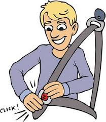
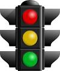
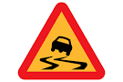
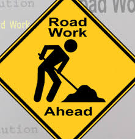
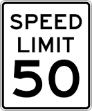
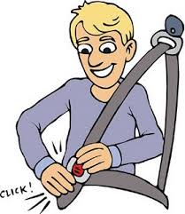
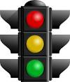
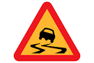
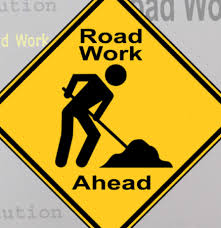
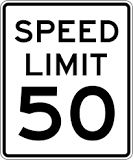